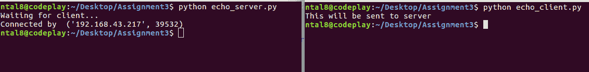
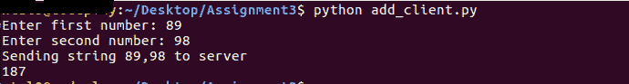

通过 TCP 套接字处理接收的客户端数据
原文：https://www.studytonight.com/network-programming-in-python/handling-received-data
现在我们将有一个例子，其中客户端向服务器发送一些数据，服务器按照指示处理数据。我们将看到两个不同的用例:
- 回应客户端-服务器程序
- 通过添加来处理接收到的数据
简单的客户端-服务器程序
在这个程序中，服务器只是回应从客户端接收到的数据。你一定见过一些门户网站，当你访问它们的页面时，它们会回显(打印)你的详细信息。首先，我们创建服务器。我们从创建一个 TCP 套接字对象开始。我们将套接字绑定到本地机器上的给定端口。在监听阶段，我们使用listen()方法的 backlog 参数确保监听队列中的多个客户端。最后，我们等待客户端连接并向服务器发送一些数据。当接收到数据时，服务器将数据回传给客户端。
echo_server.py
#!usr/bin/python
import socket
host = socket.gethostname()
port = 12345
s = socket.socket() # TCP socket object
s.bind((host,port))
s.listen(5)
print "Waiting for client..."
conn,addr = s.accept() # Accept connection when client connects
print "Connected by ", addr
while True:
data = conn.recv(1024) # Receive client data
if not data: break # exit from loop if no data
conn.sendall(data) # Send the received data back to client
conn.close()
上面的代码执行如下:
echo _ client . py
#!usr/bin/python
import socket
host = socket.gethostname()
port = 12345
s = socket.socket() # TCP socket object
s.connect((host,port))
s.sendall('This will be sent to server') # Send This message to server
data = s.recv(1024) # Now, receive the echoed
# data from server
print data # Print received(echoed) data
s.close() # close the connection
现在，由于服务器已经启动并运行，我们应该运行我们的echo_client.py

对客户端-服务器程序中的数据执行操作
在这个程序中，我们将向服务器发送信息，服务器将汇总数据并发回给客户端。但是，这有什么新的？
你会看到，当我们发送两个数字到服务器进行加法运算时，我们不是以两个整数的形式发送，而是以字符串的形式发送数据。比方说，我们想加上 4 和 5，所以我们将 4 和 5 作为一个字符串'4,5'发送。注意 4 到 5 之间的逗号,。这充当两个整数的分隔符。
在服务器上，当我们接收到字符串'4,5'时，我们将从字符串中提取整数，将它们相加，然后通过将相加结果转换成字符串将结果发送回客户端。
add_server.py
#!usr/bin/python
import socket
host = socket.gethostname()
port = 12345
s = socket.socket() # TCP socket object
s.bind((host,port))
s.listen(5)
conn, addr = s.accept()
print "Connected by ", addr
while True:
data=conn.recv(1024)
# Split the received string using ','
# as separator and store in list 'd'
d = data.split(",")
# add the content after converting to 'int'
data_add = int(d[0]) +int(d[1])
conn.sendall(str(data_add)) # Send added data as string
# String conversion is MUST!
conn.close()
add_client.py
#!usr/bin/python
import socket
host = socket.gethostname()
port = 12345
a = str(raw_input('Enter first number: ')) # Enter the numbers
b = str(raw_input('Enter second number: ')) # to be added
c = a+','+b # Generate a string from numbers
print "Sending string {0} to server" .format(c)
s = socket.socket()
s.connect((host,port))
s.sendall(c) # Send string 'c' to server
data = s.recv(1024) # receive server response
print int(data) # convert received dat to 'int'
s.close() #Close the Connection
现在，先运行add_server.py，然后运行add_client.py
输出:
